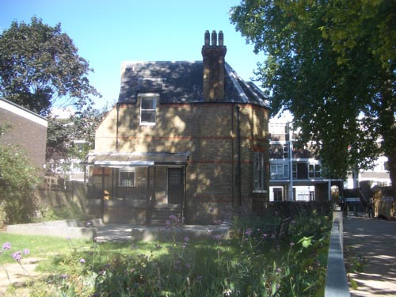
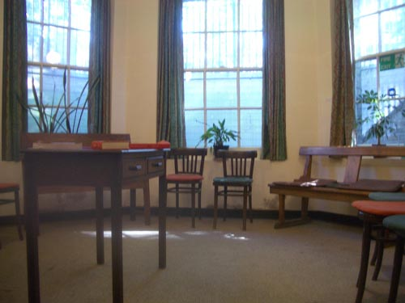

| < | > |
| embracing boredom | [2005-08-30 23:38] |
| i had the idea a couple of weeks ago to visit every quaker meeting house in london - last sunday i went to bunhill fields - next sunday i think i'll go to tottenham - i hope it will be another beautiful morning
 there were six of us in the little semi basement room - sitting still and quiet for an hour - the sun moved slowly across the carpet - for the first time i spoke in a meeting - i sat on the bench on the right  i have a friend called yuichi - he lives near mount fuji - in japan - where he teaches children about nature - he seems very pure and independent - one day i was trying to describe this special quality to another friend - and found myself saying that he was beautifully stubborn - that he had a beautiful stubbornness - it was strange to think of those two words together - beautiful and stubborn - but it was true - i think the quakers are a bit like that |
|